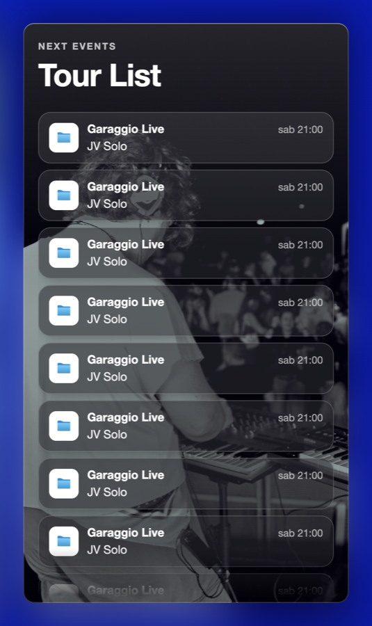
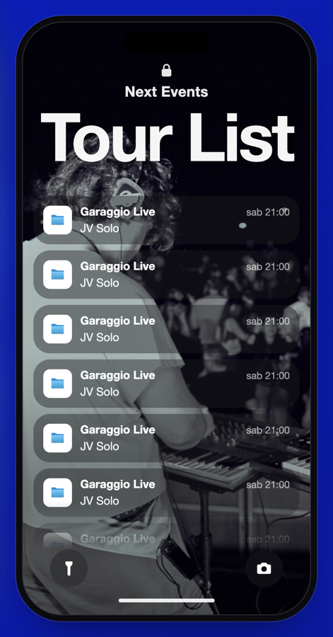

Un riquadro con un titolo e un elenco di notifiche in stile Apple, pensato per il prossimo evento o per l'elenco dei tour. Si scrive sempre allo stesso modo; il segno della prima riga sceglie l'aspetto: 🔔 riquadro generico (consigliato) oppure 🔒 schermata di blocco iPhone.

Righe vuote ignorate; le righe di un blocco di codice valgono come notifiche (senza link). Con tante notifiche l'elenco scorre in su e in giù su tutta l'area (trackpad o dito), fermandosi su ogni notifica, con il bordo sfumato da cui continuano; arrivati in cima o in fondo si prosegue con la pagina.
Prima riga con 🔔. Sul sito è un riquadro del sito:
| Cosa | Dove e come |
|---|---|
| Proporzioni | aspect-ratio: 9 / 16; nel blocco .mac.components/LockScreen.module.css. |
| Angoli, alone, filo di vetro | Le variabili delle foto singole (sezione 18): --g-single-radius, --g-single-glow, --g-single-glow-blur, --g-single-edge. |
| Vetro delle notifiche | background: rgba(44, 44, 50, 0.55); nel blocco .mac .notif: l'ultimo numero è l'opacità. |
Stessa scrittura, ma con 🔒 nella prima riga (es. 🔒 Next event | 12 dic). Sul sito diventa uno schermo di iPhone bloccato:
Per passare da una versione all'altra basta cambiare 🔒 / 🔔 nella prima riga: foto e notifiche restano le stesse.

| Cosa | Dove e come |
|---|---|
| Larghezza della schermata | --lock-w: min(100%, 380px); nel blocco .phone.components/LockScreen.module.css. |
| Proporzioni | aspect-ratio: 9 / 18.5; nel blocco .phone (più basso il secondo numero = schermo più corto). |
| Vetro delle notifiche | background: rgba(28, 28, 32, 0.42); nel blocco .notif. |
Per avere pagine che non compaiono tra le cartelle ma si aprono da un elemento grafico (una voce del menu 🖱️, una riga 🛍️, una notifica 🔔/🔒, un link nel testo).
Sul sito il callout 🙈 e tutto il suo contenuto non si vedono; le pagine invece esistono e si aprono normalmente dal loro collegamento. In Notion restano ordinate dentro il callout.
Nel database del menu tasto destro aggiungi una riga con titolo --- (tre trattini; va bene anche —) e trascinala nel punto dove vuoi la linea, come riordini le altre voci. Sul sito diventa la linea sottile di separazione del menu del Mac: non è cliccabile e non si colora al passaggio del mouse. Puoi metterne quante vuoi.